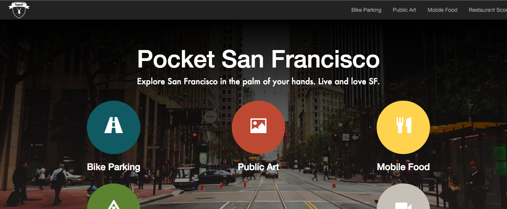
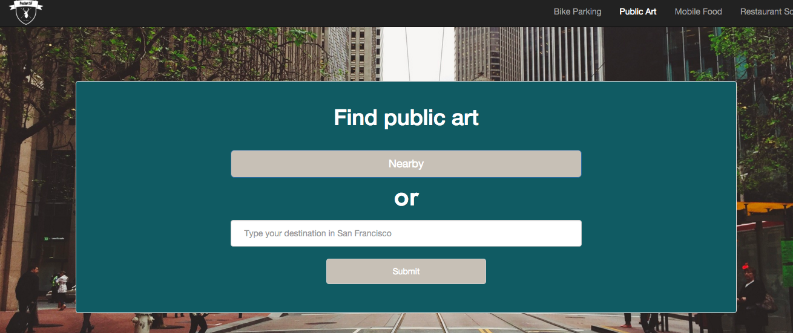
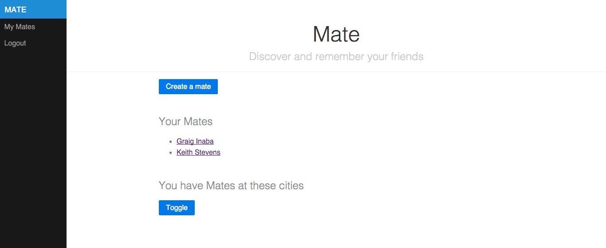
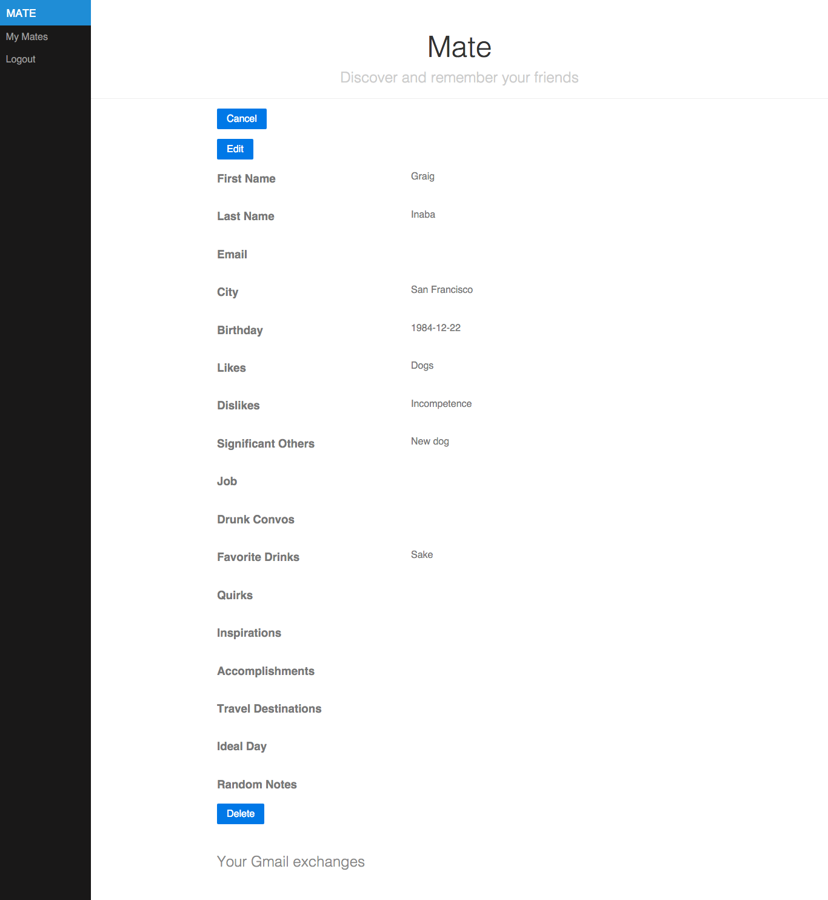
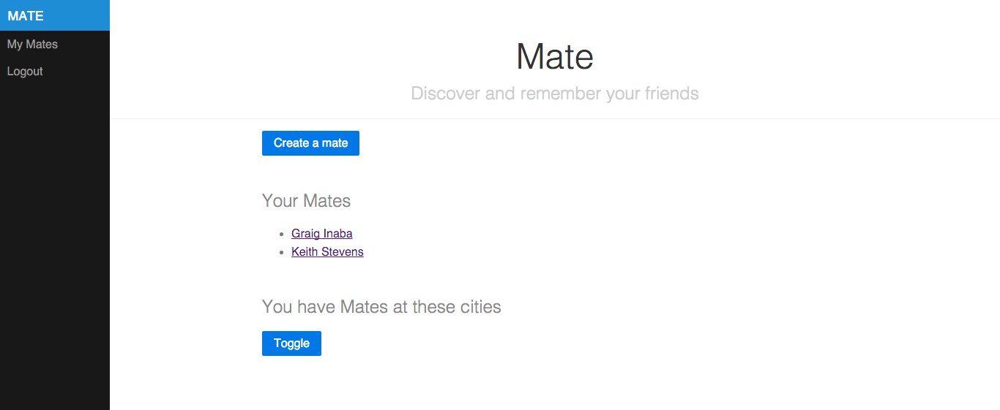
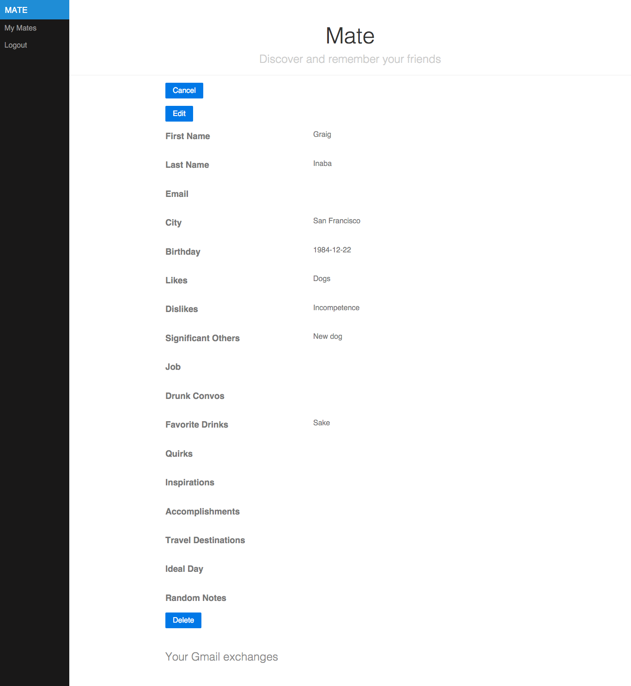

Completed Projects
Pocket San Francisco
Javascript Developer and Design co-lead | www.pocketsf.io
- Pocket SF is a responsive web app that leverages public city data and Google Maps to find practical resources in SF
- Developed full-stack with Javascript, Meteor.js, Bootstrap, Socrata API, Google Maps API, MongoDB, Cordova



Mate
Ruby Developer and Design lead
- Mate is a responsive web app that helps users remember their new and existing friends through guided note-taking
- Developed full-stack with Ruby, Sinatra, Pure
 


